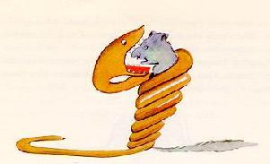

Мой первый сайт Урматбек
ЛЕОНУ ВЕРТУ
Баарына салам иштер жакшывы?
ЛЕОНУ ВЕРТУ, КОГДА ОН БЫЛ МАЛЕНЬКИМ
я
Однажды, когда мне было шесть лет, я увидел в книге под названием « Реальные истории природы» великолепную картину о первозданном лесу. Это было изображение удава, проглатывающего животное. Вот копия рисунка.

В книге сказано: «Удавы глотают свою добычу целиком, не пережевывая ее. После этого они не могут двигаться и спят в течение шести месяцев, необходимых для пищеварения».
Тогда я глубоко задумался над приключениями в джунглях. И, немного поработав цветным карандашом, мне удалось сделать свой первый рисунок. Мой рисунок номер один. Выглядело это примерно так:

Я показал свой шедевр взрослым и спросил, пугает ли их рисунок.
Но они ответили: «Пугать? Чего должна пугать шляпа?»
Но они ответили: «Пугать? Чего должна пугать шляпа?»
Мой рисунок не был изображением шляпы. Это было изображение удава, переваривающего слона. Но поскольку взрослые этого не понимали, я сделал другой рисунок: я нарисовал внутреннюю часть удава, чтобы взрослые могли его ясно увидеть. Им всегда нужно что-то объяснять. Мой рисунок номер два выглядел так:

На этот раз взрослые посоветовали мне отложить рисунки удавов, как изнутри, так и снаружи, и вместо этого посвятить себя географии, истории, арифметике и грамматике. Вот почему в возрасте шести лет я отказался от великолепной карьеры художника. Я был разочарован неудачей моих рисунков номер один и моих рисунков номер два. Взрослые никогда ничего не понимают сами по себе, и детям утомительно постоянно им что-то объяснять. Тогда я выбрал другую профессию и научился пилотировать самолеты. Я немного пролетел над всеми частями мира; и правда, что география мне очень пригодилась. С первого взгляда я могу отличить Китай от Аризоны. Если кто-то заблудился в ночи, такие знания очень ценны. В течение этой жизни у меня было очень много встреч с очень многими людьми, которые были озабочены важными вопросами. Я много жил среди взрослых. Я видел их близко, близко. И это не сильно улучшило мое мнение о них. Всякий раз, когда я встречал кого-нибудь из них, который казался мне достаточно дальновидным, я пробовал в эксперименте показывать ему свой рисунок номер один, который я всегда хранил. Я бы попытался выяснить, был ли это человек истинного понимания. Но кто бы это ни был, он или она всегда говорили: «Это шляпа».
Тогда я бы никогда не стал говорить с этим человеком о удавах, о первобытных лесах или звездах. Я бы опустился до его уровня. Я бы поговорил с ним о бриджах, гольфе, политике и галстуках. И взрослому было бы очень приятно встретить такого разумного человека.